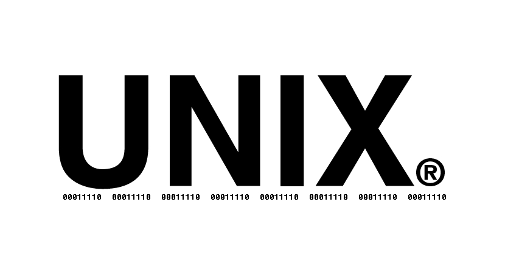
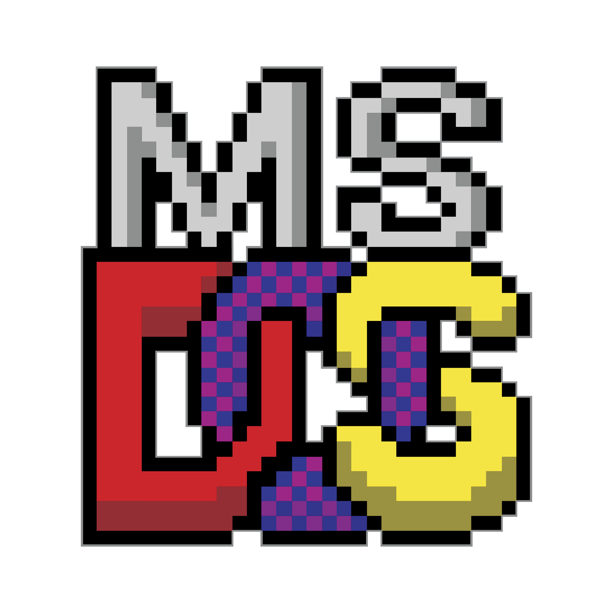

Hitos importantes en la evolución de los sistemas operativos
UNIX
Unix es un sistema operativo desarrollado en 1969 por un equipo de empleados de los laboratorios Bell de AT&T. Originalmente llamado UNICS (Uniplexed Information and Computing System), fue renombrado como UNIX. Se basó en parte en el proyecto Multics, pero pronto se distanció y se convirtió en una creación independiente liderada por Ken Thompson y Dennis Ritchie. La adopción del lenguaje de programación C permitió su portabilidad y el desarrollo de múltiples variantes.
La historia de UNIX está marcada por su evolución desde una versión original escrita en lenguaje ensamblador para la DEC PDP-7, hasta la reescritura en C para su ejecución en la PDP-11/20. La versatilidad y la facilidad de adaptación de UNIX llevaron a su expansión y popularización en los laboratorios Bell y más allá, a universidades y empresas.
AT&T comercializó UNIX bajo licencia, y varias variantes surgieron, incluyendo las familias AT&T, BSD, AIX, Xenix, GNU y Linux, entre otras. Estas implementaciones se destacan por su uso en una variedad de plataformas y entornos, desde sistemas mainframe hasta computadoras personales.
UNIX ha dejado un legado duradero en la informática, influyendo en el desarrollo de sistemas operativos modernos y estableciendo estándares para la interoperabilidad y la portabilidad. Aunque ha pasado por varias manos y disputas legales, su impacto en la tecnología sigue siendo significativo hoy en día.
Imagen de referencia

Video para reforzar contenido
MS-DOS
MS-DOS, el acrónimo de Microsoft Disk Operating System, fue el sistema operativo líder para computadoras personales IBM PC desde su lanzamiento en 1981 hasta su gradual reemplazo por sistemas con interfaz gráfica de usuario, como varias generaciones de Microsoft Windows, culminando en la versión 8.0 en 2000. Nació cuando Microsoft adquirió los derechos de 86-DOS, también conocido como QDOS, y lo adaptó para cumplir con los requisitos de IBM.
Inicialmente, MS-DOS era una versión renombrada de 86-DOS, desarrollado por Seattle Computer Products. Se lanzó en 1981 como PC DOS 1.0 para el IBM PC. Con el tiempo, se licenció a más de 70 empresas y se diseñó para ejecutarse en cualquier computadora de la familia 8086. Sin embargo, su diseño modular permitió que cada fabricante creara su propia versión adaptada a su hardware.
Las características incluían una interfaz de línea de comandos, nombres de archivo limitados a 8 caracteres y una estructura jerárquica de directorios. MS-DOS también ofrecía una variedad de comandos internos y externos para realizar tareas como copiar archivos, administrar directorios y formatear discos.
A lo largo de los años, MS-DOS evolucionó a través de varias versiones principales, desde la 1.0 en 1981 hasta la 8.0 en 2000. En 2015, Microsoft publicó el código fuente de las versiones 1.1 y 2.0 bajo la Licencia MIT.
MS-DOS dejó un legado significativo en la informática personal, y aunque ya no se usa ampliamente, su influencia sigue siendo evidente en muchos sistemas operativos modernos.
Imagen de referencia

Video para reforzar contenido
Windows
Microsoft Windows es una familia de sistemas operativos desarrollados por Microsoft y disponibles para varias arquitecturas, incluyendo x86, x86-64 y ARM. Inicialmente lanzado el 20 de noviembre de 1985 como complemento para MS-DOS, Windows se convirtió en el líder del mercado mundial de computadoras personales, superando a su competidor principal, Mac OS. La última versión estable es Windows 11 para equipos de escritorio, Windows Server 2022 para servidores y Windows 10 Mobile para dispositivos móviles.
Windows ha experimentado una evolución significativa desde su lanzamiento inicial, con versiones como Windows 95, Windows XP, Windows 7, Windows 8 y Windows 10, cada una introduciendo nuevas características y mejoras en la interfaz de usuario. Windows 11, lanzado en octubre de 2021, presenta una interfaz de usuario basada en Fluent Design, con cambios notables en el menú de inicio y en la barra de tareas.
El sistema operativo ha sido objeto de críticas y controversias a lo largo de los años, principalmente debido a preocupaciones sobre la seguridad y la inclusión de software como Internet Explorer. Sin embargo, Microsoft ha continuado desarrollando el sistema, implementando medidas de seguridad como Windows Defender y mejoras en la usabilidad.
A lo largo de su historia, Windows ha sido utilizado en una amplia variedad de dispositivos, desde computadoras de escritorio y portátiles hasta servidores y dispositivos móviles. Con el lanzamiento de Windows 11, Microsoft continúa innovando y adaptando su sistema operativo para satisfacer las necesidades cambiantes de los usuarios.
Imagen de referencia
Video para reforzar contenido
Linux
Linux es un sistema operativo de código abierto basado en el núcleo Linux, desarrollado por Linus Torvalds en 1991. Aunque Torvalds creó el núcleo, el sistema operativo completo, conocido como GNU/Linux, fue posible gracias a la colaboración de muchos desarrolladores de software libre y de código abierto que contribuyeron con herramientas y utilidades para formar un sistema operativo completo y funcional.
La historia de Linux tiene sus raíces en el proyecto GNU (GNU's Not Unix) iniciado por Richard Stallman en 1983, con el objetivo de crear un sistema operativo completamente libre y de código abierto. A lo largo de los años, el proyecto GNU desarrolló numerosas herramientas y utilidades de sistema, pero carecía de un núcleo.
Linus Torvalds, un estudiante finlandés, comenzó a trabajar en su propio núcleo como un proyecto personal mientras estudiaba en la Universidad de Helsinki. En 1991, anunció públicamente su proyecto y compartió el código fuente del núcleo Linux con la comunidad de desarrollo de software. Desde entonces, el núcleo Linux ha sido continuamente desarrollado y mejorado por miles de programadores en todo el mundo.
El término "Linux" se refiere específicamente al núcleo del sistema operativo, mientras que "GNU/Linux" se utiliza a menudo para referirse al sistema operativo completo que combina el núcleo Linux con las herramientas y utilidades del proyecto GNU, así como con otros componentes de software de código abierto.
Linux ha crecido desde sus modestos comienzos hasta convertirse en uno de los sistemas operativos más populares y versátiles del mundo. Se utiliza en una amplia variedad de dispositivos, desde servidores de alto rendimiento hasta dispositivos móviles y electrodomésticos inteligentes. Su naturaleza de código abierto fomenta la innovación y la colaboración, lo que ha contribuido a su éxito y continua evolución a lo largo de los años.